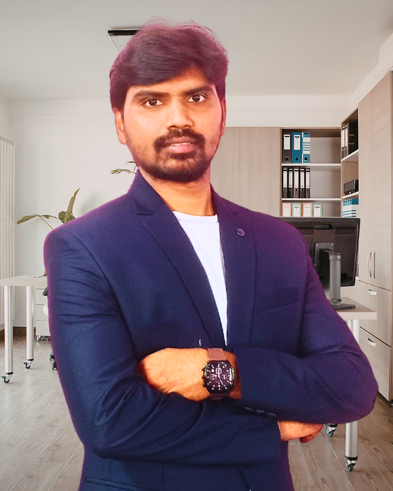

Decision-support for paid media under uncertainty.
Upload Meta & Google exports, validate signal quality, and receive a clear decision outcome — SCALE / HOLD / REDUCE / BLOCK — with structured rationale, guardrails, and an audit snapshot.
What MDU Engine does
- Validates whether your data window is decision-ready (typically 7–30 days).
- Normalizes exports into an engine-ready daily schema.
- Evaluates outcomes under downside-risk and uncertainty constraints.
- Explains every decision outcome and explicitly blocks unsafe action.
- Logs a reproducible audit snapshot (versions, thresholds, outcome).
Journal of Emerging Technologies and Innovative Research (JETIR)
"A Decision-Support Framework for Optimisation Under Uncertainty in Data-Driven Growth Systems" — peer-reviewed and published, ISSN 2349-5162.
View Journal →KL University — Independent Academic Review
Dr. Sk. Hasane Ahammad, Department of Electronics and Communication Engineering, independently evaluated the MDU Engine methodology and decision-support architecture.
Eluru College of Engineering & Technology
Dr. S. Suresh, Professor and HOD, Computer Science Engineering, provided independent academic commentary on MDU Engine's applied decision-support design in noisy data environments.
TechStory — Rethinking Optimisation
Featured in TechStory for bringing structure to decision-making in unstable data environments. Coverage focused on the decision-readiness framework underlying MDU Engine.
Read Article →The problem MDU Engine addresses
Capital allocation decisions in high-variance environments are often made on unstable, incomplete, or noisy signals.
Optimisation systems tend to push action without making uncertainty, downside risk, or decision irreversibility explicit. This leads to premature scaling, difficult-to-reverse budget changes, and weak accountability when outcomes degrade.
Who MDU Engine is for
Business owners & founders
Protect capital when mistakes are costly and signals are noisy.
CFO & finance teams
Add governance, loss-protection, and auditability to media spend decisions.
Analysts & growth operators
Work with explicit confidence tiers and rationale instead of dashboard pressure.
Technical teams
Prefer deterministic, explainable logic with reproducible decision records.
Who this is not for
Automated optimisation • novice experimentation • growth hacks • execution-first systems without risk governance
From instinct to defensible decisions.
Most paid media failures come from reacting too quickly to noise, or acting too late while losses compound. MDU Engine is intentionally conservative, explainable, and repeatable.
Decision scenarios
Explicit conditions such as insufficient data windows, unstable signals, volatility spikes, or negative value drift — each mapped to a consistent outcome.
Loss-protection gates
Safety rails that block decisions when downside risk dominates or confidence thresholds are not met. Defaults to restraint.
Signal quality indicator
A single quality indicator reflecting data sufficiency and stability — not an optimisation score or performance promise.
What ships next (without destabilising the engine)
Benchmarking (planned)
Start with a simple baseline: compare current behaviour to your own trailing period and flag abnormal variance.
Decision memory UI
A decision history panel showing recent runs, inputs, versions, outcomes, and explanation trails — built for audit and review.
Stability over speed
The landing page remains public at mduengine.com. The decision engine operates independently at app.mduengine.com.
Trust, transparency, and safety by design.
Explainable outputs
No black-box advice. Every outcome includes the primary constraint, supporting factors, and confidence assessment.
Validation gates
Decisions are blocked when data is insufficient, unstable, or fails defined safety thresholds.
Audit snapshot
Each run records versions, thresholds, data window, and outcome for reproducibility and review.
Product principles
Loss-first decisions • Explainability over persuasion • Human-in-the-loop • Explicit refusal under uncertainty • Versioned and auditable outcomes
"Satish's contribution was not to improve our optimisation mechanics. It was to introduce a layer of evaluation that sat between what we observed and what we decided to do about it. He raised a question that we had not been asking systematically: is this data sufficiently reliable and stable to justify intervention at all? What he introduced was something categorically distinct — a structural interrogation of whether the act of intervening was itself appropriate. To my knowledge, this is not a common framework in performance marketing."

Satish Saka
Satish Saka is a product founder and technology practitioner specialising in decision-support systems for data-driven environments. With over six years of experience in performance marketing, attribution architecture, and growth strategy across India, Europe, Asia, and the US, he observed a consistent pattern: teams acting on data that was not yet ready — introducing instability rather than resolving it.
MDU Engine is the direct result of that observation. It introduces a structured evaluation layer between data observation and optimisation action — helping organisations assess whether their data is reliable enough to act on before any intervention is made. His research on this framework is published in JETIR and has received independent academic evaluation from KL University, Vijayawada.